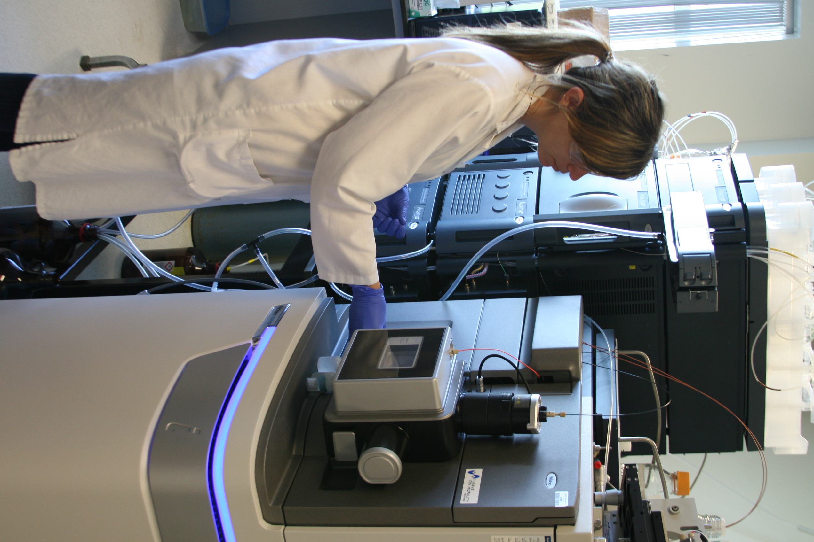

About
The research of our group is centred on the investigation of host-pathogen relationships and the integration of omics sciences. We have utilized many approaches to carry out these investigations with a constant of using new technologies coupled to the power of bioinformatics and more specifically machine learning to gain insight into biological processes.My Chair is focused in translating our research discoveries to the market. We identify problems at the bedside and try to solve them at the bench.
Our bioinformatics efforts are implemented at Université Laval with funds provided by the Canadian Foundation for Innovation and the Compute Canada infrastructure.
